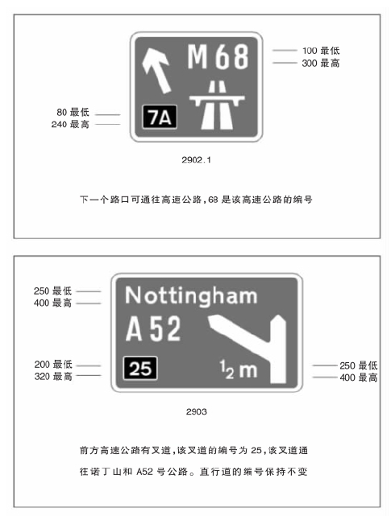
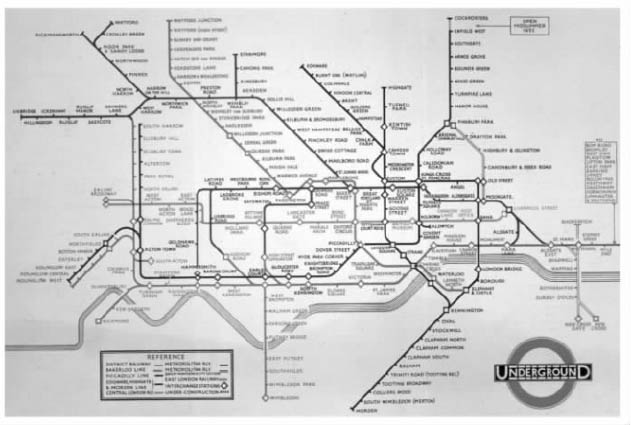

在设计活动中，人们愈来愈重视各种关于系统的问题。这种重视与对具体形式的关注相反。人们之所以会关注系统，在某种程度上，是由于人们认识到现代生活愈来愈复杂，元素与元素之间存在着多重结合与交叠，进而会影响整体绩效。技术基础设施系统的普及成了现代生活的基石。2000年末，加利福尼亚州爆发的电力供应危机就证明了这一点。人们日渐意识到，信息技术在衔接不同职能（与人们日渐攀升的电力消费）时起了相当大的作用。从另一角度，人们不断认识到，人类对自然系统的干涉造成了大量的环境问题。也因为这样，人们慢慢形成了生态、有机联系等概念。这些都是引发人们重视系统的原因。
系统可以理解为由一群相互影响、相互关联或者相互依赖的元素构成的（或有可能构成的）一个综合体。在设计领域中，系统的综合性可以通过不同的方式来表现。不同的元素可以通过功能相连的方式结合起来，就像运输系统那样；或通过一个结构或渠道的共同网络结合起来，就像银行或者电信系统那样；或由相互兼容的元素构成有条理的、能够进行灵活管理的结构，就像模块化生产系统那样。系统的另一个特点就是，相关观念和形式的结合要求一定的准则、标准以及程序来确保和谐、有序的相互作用。这就要求有系统思维的能力，同时也意味着合理的、系统的以及目的明确的过程。
形式和视觉方案只能应对比较简单的任务，此时，若设计师继续沿用这些手段来处理系统产生的问题，就会因为无法找出问题的实质，继而无法适应新的要求而彻底失败。历史上的事件时常证明，新技术在出现之初会倾向于用已有的形式来定义，新形式被研发出来之前需要有一个过渡阶段。比如在汽车之前是“无马车厢”；又比如台式电脑基本上就是一个电视机显示器加上一个打字机键盘，现在仍需改进。对于很多一开始就要适应实际需要的系统而言都是如此，只有通过发展以后才能达到所谓的系统性的程度。起初，汽车是以孤立的形式存在的。如果人们想远行必须携带燃料，如果出现故障车主得自己维修。出城以后，大部分的路都是土路。直到后来，系统方法才渐渐出台，包括道路的建设和维护、信息系统和支持系统（即维修、燃料补给、食品供给等）。高速公路在不同的时期和地方名称不同，在英国被称作motorways，在美国被称作freeways，在德国被称作autobahns。人们花了半个世纪的时间来设计建造高速公路的关联系统，才普遍满足了司机们的期望。
除了系统的物理方面以外，很明显，信息在与用户的交流方面也起到了很重要的作用。公路网的一个特色是交通标志系统，这个标志系统列举了在一个系统环境下设计的一些关键特征。在公路网中，每一个方向指示标志都提供了与具体地点相关的详细信息，如它所处的地理位置和周边的连接线路。然而，它们不是被独立设计出来的，而是得服从于一个标准规范。这个规范决定了每个标志的尺寸、使用的字样和符号，以及所采用的颜色。比如，英国高速公路上的标志都是蓝色的，字体用白色；其他主要道路的标志用深绿色，公路编号使用黄色字体，地名用白色字体；支线道路的符号用白色，字体用黑色。因此，人们通过精确的、标准化的符号形式能迅速进行识别。每个标志都能提供非常详尽的信息，并同时以能够与整个系统建立联系的方式进行编码。这种系统的目的只在于提供清楚的信息，告诉人们在某个地点转弯或选择某个方向将会怎样，至于真正想去的地方则必须由司机自己决定。有必要补充的是，有些信息形式（如地图或者计算机导航系统）呈现的方法并不完全一样，但能与其他方法兼容，这些对于用户操作系统而言也是至关重要的。

图26 标准的界定：由英国交通部推出的英国路标系统模板。
方向指示标志还包括路边一系列有着其他用途的记号和象形符号。比如在欧洲，这一类符号在某些情况下已经建立了国际标准。人们要能够区分哪些符号要求遵守，哪些符号只是帮助我们做决定。比如，禁止通行的符号或限速标志试图阻止或控制行为；另一些标志则对可能存在的危险或者出现的问题发出警告，要求司机做出决策，如提示前方十字路口有学校或路前方是一个急转弯。类似这样的基本的区分非常重要。
总而言之，任何系统的效率都取决于其整体一致性。这种一致性使得用户能够通过明晰的标准，了解并找出解决问题的方法，避免不必要的问题。由于新的视觉习惯要求用户进行一定程度的学习和适应，那些建立在新的视觉习惯上的新系统，对整体一致性的要求应更为严格。由于设计师们试图通过创建越来越多的标志来提供视觉速记服务，在这个方面，计算机程序遇上了大麻烦，过多的标志以及标志本身的含混不清不可避免地造成了大量难题。

图27 全世界的典范：由哈里·贝克设计的伦敦交通图（1933）。
此外，运输业从其他方面也证明了对系统方法的需求，比如一些主要城市对地铁系统或捷运系统的需求。以汽车和公路系统为例，人们对于城市运输系统整体特性的了解是从局部逐个开始的，经过不断的试验和失误，才形成了具体的概念。在这个方面，伦敦交通公司在十九世纪末二十世纪初到二战后的发展可以作为研究的主要案例。在弗兰克·皮克的领导下，不同部门有组织地帮助公司建立了一套多层次的系统方法，首先是确定公共的徽标、字体设计和各种标志，接下来是列车、汽车和车站设备的标准式设计。哈里·贝克在1933年为伦敦交通公司设计的地图是信息设计领域中杰出的作品，这幅地图大大地加深了用户对系统的了解。尽管不是受正式委托（是由贝克在业余时间设计的），但这幅地图非常成功地帮助人们清楚明了地从整体上了解了这个系统，以至于世界各地都争相效仿。
为了在协调一致和特殊要求之间达到一种平衡，我们可以将整体模式分解成很多子系统，几乎所有城市的交通系统都向我们证明了这一点。就某些方面而言，在地区之间运送乘客时会产生一些问题。要解决这些问题，达到高效操作，就需要不同元素之间技术上的配合。不同类型的车辆、通讯工具和环境的要求各自不同，但是，一套标准的方法会对操作和维护提供相当大的帮助。我们不仅可以在物理传达的意义上考虑这种系统，也可以将它运用到信息通讯领域。近来的概念将注意力集中在用户的立场之上，关注用户与功能、服务范畴的冲突。观测使用模式能够促使一般概念的形成，并确保一般概念成为即将建立的信息通讯系统内的公共标准。
乘火车或地铁旅行时，我们能遇到不同的形式，正好可以证明这一点。标志符表明了某项设施的存在，车站入口上方悬挂的一个标志即是如此，公众如果想要进入车站，就可以由此进入。地图、时刻表以及票价表提供了服务方面的信息。乘客可以从自动售票机或者报刊亭里购得车票，车票上的说明可以帮助他们找到通道。详细的说明可以给乘客指路，帮助他们进入机构内，到达不同线路或通往不同方向的月台。限制性标志（如阻止用户进入操作部门的标志，或者禁止吸烟的标志）也是系统的一部分。列车上会提供进一步的信息，车站内会有更多的标志符，用户可以通过它们来了解该什么时候下车。车站内常常装饰着美观的图像，比如壁画或者马赛克图画，试图为乘客提供娱乐和刺激。在列车上，可能还有其他的表达途径。比如，在那些必不可少的广告中间也会有别出心裁的个人交流，如照片或者诗歌等。在车站，我们还发现一些机构试图通过宣传来将其信仰强加给大众。下车后，乘客可以根据路线指南和周边地区的地图，迅速找到转乘车辆或车站出口的具体方位，迅速熟悉周边环境。在使用一种或多种官方语言的地区，传达模式会变得很复杂。香港特别行政区公共交通系统内所有的标志符都是中英文对照的。
图28 应对多元化：香港特别行政区街头的双语路标。
当然，除此之外，还有一个类似的环境和物品模式，环境和物品与传达形式相互关联，组成了用户的体验系统。比如，自动售票机和列车本身就属于物品，而售票处、候车大厅、走廊和月台则属于典型的环境。在便于使用方面，最有效的系统是保持着一致性和标准化模式的系统，它帮助用户了解下一步会如何，同时维持一种安全感和熟悉感。为了满足这些需要，设计需要配合使用大量用途不同的手段（如标志、场所、车辆、语音），使用户能不费力气地解决复杂的问题。比如，里斯本的地铁系统在所有车站的站台上都设有系统集合地图，这些地图采用重复的模式，以城市地理环境为背景。它还有地铁线图表以清楚地指示系统的组成要素，以及每个站台周边环境的详细地图。东京地铁的地图沿用了伦敦交通公司的模式，使用抽象形式和彩色代码标出不同的线路，而且将这个安排做了更进一步的发挥。每个线路的标志和布告也使用与线路同样的颜色，走廊和通道的沿途也画着一些彩条，为乘客寻找具体线路提供指示。
在专为身体有缺陷的人提供特殊预防性措施的传达设计中，这类标准化带来了一个特殊的优势。比如，简单的有专为坐轮椅的乘客服务的指示箭头、标志和升降机等。但对于盲人而言，视觉标志显然是多余的，他们的问题需要采用更复杂的模式来解决。东京地铁的许多系统都采用了独特的触觉交流方式。车站甬道的地面上特别用瓷砖条铺成了狭长的盲道。盲道位于道路中间，盲人只需拄着拐杖便能找到他们要走的路。在交会地点处，盲道上瓷砖条的图案以及它们的触感会有所改变，以提醒盲人这里不止一条路。为了解决盲人的困难，专门的自动售票机在关键点上也设有盲文指示和按钮，帮助他们购得车票以及浏览系统。这些盲道也延伸到了月台上，通过特殊的设计，帮助盲人找到列车的车门。我们完全可以把为盲人提供的这些预防性措施当作是整个大系统下的子系统。
设计领域其他方面的系统方法近年来也发展迅速，这一点在产品开发和制造方面尤为明显。随着全球化和区域经济共同体（如欧盟）的扩张，这些组织加大了连接不同市场和文化的需求，但同时，扩张也带来了新的问题。
全球化趋势特别重视那些看似矛盾的需求。一方面，它要求产品与产品之间有更多的共性以实现大范围的经济增长；另一方面，它又要求能够满足不同品味的具体要求，适应特定的市场。全球化历经了很多形式，在这些形式中隐含了从标准产品生产到标准部件生产的转换。那些标准化的部件能够灵活装配成不同的形式，满足众多的需求。
早期的大规模生产模式非常僵化，只有在大量生产标准化产品时才能达到最高效率。但如此一来，即便只在标准产品上进行相对简单的变动都会使整个程序变得相当复杂。比如，替不同市场生产的汽车，有时会要求左座驾驶，有时会要求右座驾驶。解决方案之一就是所谓的“中心线设计”原则，即一条主轴的两边同时作业，车辆装配在其中任意一条线上进行，这样便能够满足任何具体市场的驾驶实践。然而，这样的调整代价十分昂贵，也会产生混乱。
大规模生产的设计通常倾向于单个分离性的产品，这类产品通常以零配件的形式被生产出来，经过组装后可以实现特定的目标。这个过程相当漫长，这种专一性加上具有个人风格的设计导致了市场的分化。新产品的生产过程同样耗时，而且花费一样很大。然而，生产工艺发生的改变提供了迥异的设计途径，尤其是在弹性生产手段逐步取代大规模生产的趋势下。这些都使得生产工序的焦点从成品生产转向便于快速合成和装配的配件的生产。实现这个目标的手段之一就是把产品范畴内的核心元素配置成标准化部件，而且，这些部件都需配备标准化的接口或者连接，这一点同样十分重要。这样一来，系统便能朝着为用户提供更多选择的方向发展。用户可按自己的需要改装产品，这个过程被称为大批量定制，这是一个看似自相矛盾的过程。
日本的国际自行车工业公司可被看作是大批量定制发展早期的一个范例。公司建立了一个系统，借此经销商可以向客户提供定制自行车的机会。如此一来，经销商就可以评估客户规模，确定颜色偏好和应附加的部件。国际自行车工业公司收到订单后，由一个能生成一千一百万件不同模型的计算机系统为客户定制的自行车绘制设计图。随后，工人会把标准化的部件组装成产品。定制的模件投递时，它的框架上有丝网印刷的客户名称。
摩托罗拉公司位于佛罗里达州博卡拉顿的工厂在组织生产寻呼机时沿用了类似的原理。据估计，它向顾客提供了两千九百万种不同的寻呼机模型。从美国任何一个地方递送上来的订单到达公司约十五分钟后，客户定制的产品就会投入生产，隔天便可配送。对于厂商而言，这种“准时化生产方式”可以避免库存造成的资金冻结。对于客户而言，能逐一规定产品的具体细节，按他们的希望购买，这毫无疑问提高了他们对产品的满意度。
惠普公司生产的打印机在面对差异很大的全球性市场时，所采用的大批量定制系统采取了延迟差异的办法。任何产品的生产在未达到供应链的最后一个潜在环节前都不考虑它的变异情况，这就要求将配送工序纳入到产品设计中，并且产品的整个设计要适应配送的需要。基本产品递送到离客户最近的供应点后，根据具体环境的需要（如产品与当地电力系统的兼容性）再进行装配。
随着组模单元的运用，灵活配置得到了进一步的发展。同时，这也意味着产品的整体结构被分解成了若干基本的功能部件和转换部件。这些部件按标准组模单元分组，进而命名为可选性附加元件，这一举措促使系列产品大量地涌现。模式化设计使得每个部件都能经受检验，成为高质量产品。这些部件运用于不同的配置方案，生成一系列能适应不同市场需求的产品，又或者成为满足个别用户具体要求的用户化产品。公司以往是将成品作为基本概念的出发点的，随着模块系统的建立，公司的重心转向了整体系统概念内的程序设计。
二十世纪四十年代末，来自丹麦比隆的奥勒·基尔克·克里斯蒂安森为儿童设计的乐高塑料拼装玩具一直是模式化运用的通用例证。塑料拼装玩具是从早期的木块发展而来的，它从木块僵化的标准几何形式中发掘出了大量可行的变体。
然而，模块系统的渊源可以追溯到更早的时候，而且，早在二十世纪头十年它就已经出现在组合家具的设计中了。这类家具以标准的长、宽和高为基础进行设计。到了二十年代，模块系统变得更加普遍，生产出来的组合家具能够适应不同面积的家庭，或按用户要求进行组装。到了八十年代，德国公司（如西曼帝克公司和博德宝公司）设计的厨房系统畅销欧洲市场。客户能够选择一系列模块组件来适应特别的空间和需要，同时，销售点可以通过计算机模拟的三维影像来展示最终结果，帮助客户调整组件或末道漆色的选择。一旦选择结束，订单完成，客户的具体要求就会通过电脑递送到工厂，工厂按订单生产组件。这样一来，又节约了囤货和仓库需要的大笔费用。
图29 统一与多样化：西曼帝克橱柜。
电子制造商普遍地利用模块系统，大量地生产各种音频和视频产品。戴尔电脑公司在模块系统运用这方面的成效最为惊人。它利用模块设计开发了互联网作为通讯装置的潜力，重新界定了竞争的维度。通过使用互联网或电话，买主可以在公司的网站上按自己的规格订购电脑。整个过程中，买主先从一批模块部件中进行选购，最后选择配送方式。公司不需要把部件囤积于大型仓库之内，节省了大笔开支，这就使得它取得了实在的价格优势。
将这种程序进一步扩展，我们就得到了产品平台的概念。为了满足基本的功能性目的，这些平台把模块和部件组合在了一起。在这个平台之上，我们可以迅速地开发和制造多种产品配件。这使得公司的基本观念能够迅速地针对市场变化或竞争环境做出调整。索尼公司就可算是其中一个成功的范例。1979年索尼公司推出了一款随身听。这款随身听兼有基本功能模块和高级功能模块，一开始就取得了很好的市场反响。每个模块都能帮助它迅速地推出一系列的样品，以测试市场上不同层次的应用和特征。这些模块是它与效仿者竞争的基础，并确保了它不败的地位。
索尼公司使用平台系统在竞争中保持领先，柯达公司则利用它们来回击日本富士公司在1987年推出的一款使用35毫米底片的一次性相机。柯达公司花了一年的时间研发了一个可与之竞争的样品，到1994年时，它已经占据了美国市场70%的份额。即使在这样一个特殊的领域，作为一个效仿者的柯达公司也比富士公司推出的产品更多、价格更便宜。这一点再次证明，平台概念加上通用组件和生产过程是这次成功的基础。在这个基础之上，这种相机可以快速、成批地投入市场。
1995年，福特汽车公司开始了一项长期改组计划，该计划吸收了平台理论，试图把公司打造成全球性组织。自此以后，公司在开发车辆类型时，重心都放在全球视角上，而不是为特殊市场生产特定车辆。这样做的目的在于减少产品开发的费用。在汽车行业，产品开发的费用已经攀升到一个惊人的高度了，只有在全球性市场范围内才能进行调节。基于一系列标准车辆的概念，平台生产方法使福特公司能够在世界上任何能提供最廉价、最高速生产服务的地方制造元件。反过来，这些方法又能成为适应个别差异市场的基础。当具体的需求被确定后，这些市场又能得到快速开发。
这些开发和设计系统解决了明显存在于高速、经济的产品生产需求与客户按需定制产品的愿望之间的矛盾。这样做是为了通过特性和共性的并置，在低成本、高效率的生产系统中找出具体的举措。
这类方法的优点还体现在，它们能够在后续的服务中为用户提供更大的价值。佳能公司生产出来的第一台个人复印机并没有配套服务，后来，通过在墨盒中添加通用模块里常用到的一些元件，解决了这个问题。事实上，每次更换墨盒的时候，机器都获得了一个新机械，如此便大大地减少了维修的需要。
然而，设计师遇到的最大挑战可能是如何更好地使人们创造出来的系统与数万年进化的结果（即生态环境）和谐共存。如果我们能了解系统的本性，了解局部变化是如何影响系统，系统又是如何影响相连的各个系统的，就有可能减少一些相对明显的危害效应。如果客户、公众和政府授以适当的方针和方法，设法从根本上解决问题，那么设计可能会成为一种解决办法。遗憾的是，经济系统的基本观点坚信共同利益取决于以个人利益为前提所做出的各个决定的总和，若是用这样一个系统来解决人类在改造自身环境时出现的问题，不得不让人怀疑它的能力。在这个意义上，设计本身也成了问题的一部分。设计是经济和社会这个大系统下的一个子系统，而且在这些背景下，它不是独立运行的。